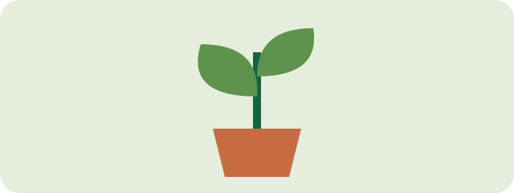

Hello, I am Alex
I enjoy making things, solving puzzles, and sharing what I learn.
This page uses HTML and CSS, with no JavaScript.
This week's goals
- Build a profile page
- Change its colors
- Explain one new tag to a friend
What is semantic HTML?
Tags such as header, main, and section describe the role of the content.